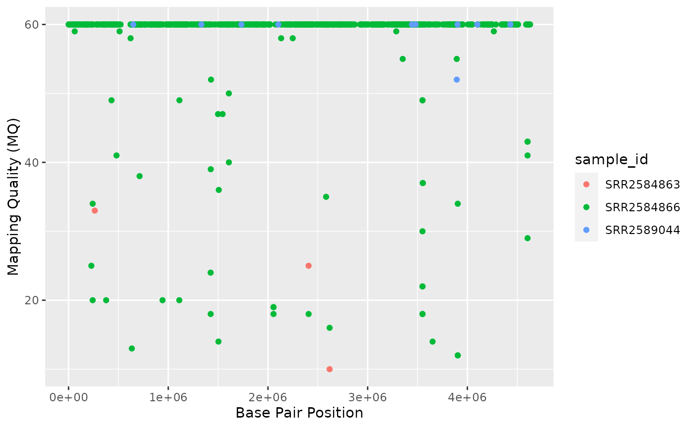

Data Visualization with ggplot2
Klaus Schliep
Mai 17, 2021
05-data-visualization.RmdWe start by loading the package ggplot2.
Plotting with ggplot2
ggplot2 is a plotting package that makes it simple to create complex plots from data in a data frame. It provides a more programmatic interface for specifying what variables to plot, how they are displayed, and general visual properties. Therefore, we only need minimal changes if the underlying data change or if we decide to change from a bar plot to a scatter plot. This helps in creating publication quality plots with minimal amounts of adjustments and tweaking.
ggplot2 functions like data in the ‘long’ format, i.e., a column for every dimension, and a row for every observation. Well-structured data will save you lots of time when making figures with ggplot2
ggplot graphics are built step by step by adding new elements. Adding layers in this fashion allows for extensive flexibility and customization of plots.
To build a ggplot, we will use the following basic template that can be used for different types of plots:
ggplot(data = <DATA>, mapping = aes(<MAPPINGS>)) + <GEOM_FUNCTION>()- use the
ggplot()function and bind the plot to a specific data frame using thedataargument
ggplot(data = variants)- define a mapping (using the aesthetic (
aes) function), by selecting the variables to be plotted and specifying how to present them in the graph, e.g. as x/y positions or characteristics such as size, shape, color, etc.
-
add ‘geoms’ – graphical representations of the data in the plot (points, lines, bars).
ggplot2offers many different geoms; we will use some common ones today, including:* `geom_point()` for scatter plots, dot plots, etc. * `geom_boxplot()` for, well, boxplots! * `geom_line()` for trend lines, time series, etc.
To add a geom to the plot use the + operator. Because we have two continuous variables, let’s use geom_point() first:
ggplot(data = variants, aes(x = POS, y = DP)) +
geom_point()The + in the ggplot2 package is particularly useful because it allows you to modify existing ggplot objects. This means you can easily set up plot templates and conveniently explore different types of plots, so the above plot can also be generated with code like this:
# Assign plot to a variable
coverage_plot <- ggplot(data = variants, aes(x = POS, y = DP))
# Draw the plot
coverage_plot +
geom_point()Notes
- Anything you put in the
ggplot()function can be seen by any geom layers that you add (i.e., these are universal plot settings). This includes the x- and y-axis mapping you set up inaes(). - You can also specify mappings for a given geom independently of the mappings defined globally in the
ggplot()function. - The
+sign used to add new layers must be placed at the end of the line containing the previous layer. If, instead, the+sign is added at the beginning of the line containing the new layer,ggplot2will not add the new layer and will return an error message.
# This is the correct syntax for adding layers
coverage_plot +
geom_point()
# This will not add the new layer and will return an error message
coverage_plot
+ geom_point()Building your plots iteratively
Building plots with ggplot2 is typically an iterative process. We start by defining the dataset we’ll use, lay out the axes, and choose a geom:
ggplot(data = variants, aes(x = POS, y = DP)) +
geom_point()
Then, we start modifying this plot to extract more information from it. For instance, we can add transparency (alpha) to avoid overplotting:
ggplot(data = variants, aes(x = POS, y = DP)) +
geom_point(alpha = 0.5)We can also add colors for all the points:
ggplot(data = variants, aes(x = POS, y = DP)) +
geom_point(alpha = 0.5, color = "blue")Or to color each species in the plot differently, you could use a vector as an input to the argument color. ggplot2 will provide a different color corresponding to different values in the vector. Here is an example where we color with sample_id:
ggplot(data = variants, aes(x = POS, y = DP, color = sample_id)) +
geom_point(alpha = 0.5)Notice that we can change the geom layer and colors will be still determined by sample_id
ggplot(data = variants, aes(x = POS, y = DP, color = sample_id)) +
geom_jitter(alpha = 0.5)To make our plot more readable, we can add axis labels:
ggplot(data = variants, aes(x = POS, y = DP, color = sample_id)) +
geom_jitter(alpha = 0.5) +
labs(x = "Base Pair Position",
y = "Read Depth (DP)")Challenge
Use what you just learned to create a scatter plot of mapping quality (
MQ) over position (POS) with the samples showing in different colors. Make sure to give your plot relevant axis labels.Solution
ggplot(data = variants, aes(x = POS, y = MQ, color = sample_id)) + geom_point() + labs(x = "Base Pair Position", y = "Mapping Quality (MQ)") {: .solution} {: .challenge}
Faceting
ggplot2 has a special technique called faceting that allows the user to split one plot into multiple plots based on a factor included in the dataset. We will use it to split our mapping quality plot into three panels, one for each sample.
ggplot(data = variants, aes(x = POS, y = MQ, color = sample_id)) +
geom_point() +
labs(x = "Base Pair Position",
y = "Mapping Quality (MQ)") +
facet_grid(. ~ sample_id)This looks ok, but it would be easier to read if the plot facets were stacked vertically rather than horizontally. The facet_grid geometry allows you to explicitly specify how you want your plots to be arranged via formula notation (rows ~ columns; a . can be used as a placeholder that indicates only one row or column).
ggplot(data = variants, aes(x = POS, y = MQ, color = sample_id)) +
geom_point() +
labs(x = "Base Pair Position",
y = "Mapping Quality (MQ)") +
facet_grid(sample_id ~ .)Usually plots with white background look more readable when printed. We can set the background to white using the function theme_bw(). Additionally, you can remove the grid:
ggplot(data = variants, aes(x = POS, y = MQ, color = sample_id)) +
geom_point() +
labs(x = "Base Pair Position",
y = "Mapping Quality (MQ)") +
facet_grid(sample_id ~ .) +
theme_bw() +
theme(panel.grid = element_blank())Challenge
Use what you just learned to create a scatter plot of PHRED scaled quality (
QUAL) over position (POS) with the samples showing in different colors. Make sure to give your plot relevant axis labels.Solution
ggplot(data = variants, aes(x = POS, y = QUAL, color = sample_id)) + geom_point() + labs(x = "Base Pair Position", y = "PHRED-sacled Quality (QUAL)") + facet_grid(sample_id ~ .){: .solution} {: .challenge}
Barplots
We can create barplots using the geom_bar geom. Let’s make a barplot showing the number of variants for each sample that are indels.
ggplot(data = variants, aes(x = INDEL, fill = sample_id)) +
geom_bar() +
facet_grid(sample_id ~ .)Challenge
Since we already have the sample_id labels on the individual plot facets, we don’t need the legend. Use the help file for
geom_barand any other online resources you want to use to remove the legend from the plot.Solution
ggplot(data = variants, aes(x = INDEL, color = sample_id)) + geom_bar(show.legend = F) + facet_grid(sample_id ~ .){: .solution} {: .challenge}
ggplot2 themes
In addition to theme_bw(), which changes the plot background to white, ggplot2 comes with several other themes which can be useful to quickly change the look of your visualization. The complete list of themes is available at https://ggplot2.tidyverse.org/reference/ggtheme.html. theme_minimal() and theme_light() are popular, and theme_void() can be useful as a starting point to create a new hand-crafted theme.
The ggthemes package provides a wide variety of options (including an Excel 2003 theme). The ggplot2 extensions website provides a list of packages that extend the capabilities of ggplot2, including additional themes.
Challenge
With all of this information in hand, please take another five minutes to either improve one of the plots generated in this exercise or create a beautiful graph of your own. Use the RStudio
ggplot2cheat sheet for inspiration. Here are some ideas:
- See if you can change the size or shape of the plotting symbol.
- Can you find a way to change the name of the legend? What about its labels?
- Try using a different color palette (see http://www.cookbook-r.com/Graphs/Colors_(ggplot2)/). {: .challenge}